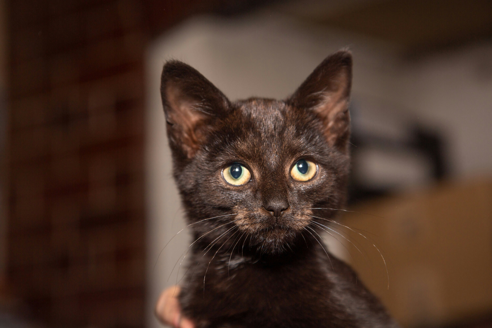

Cómo perder un sofá en 10 días
Crónica de un inquilino inesperado

- Pablo Paredes Haz
- 3 min read
- Sep 4, 2025
El primer encuentro fue todo lo que esperaba… y más. El pequeño gato, tímido y curioso, entró a mi casa como si ya se sintiera dueño del lugar. Y, debo admitirlo, se apoderó de mi corazón al instante. Lo llamé "Senku" (otaku detected...), aunque en ese momento no sabía si él me adoptaba a mí o si, simplemente, era yo el que estaba siendo adoptado por él.
Pasaron las primeras horas entre mimos, caricias y esos momentos mágicos de ver cómo un ser pequeño empieza a entender que ahora tiene un hogar. Yo estaba completamente encantado.

Senku se acomodó rápidamente. En su pequeño mundo, no había espacio para reglas o protocolos. Nada de "no subirse a los muebles" o "no rascar las cortinas". Y, claro, el sofá. Era lo primero que quería explorar, escalar, y destruir.
Cada día pasaba más tiempo en su nueva casa, corriendo por el salón, jugando con juguetes que yo le había comprado (pero que, claro, prefería ignorar para jugar con las cosas más "interesantes", como los cables o, ya saben, mis zapatillas). Pero lo más importante: él y yo estábamos creando una rutina. Él, jugando sin parar. Yo, haciéndole de todo menos caso a ese sofá tan "perfecto" que había costado tanto esfuerzo elegir.
Los días siguientes fueron una sucesión de pequeñas catástrofes. El sofá, que había comenzado como una pieza elegante de decoración, ahora se convertía en un campo de batalla. Senku, con su inagotable energía, no solo arañaba el sofá a su gusto, sino que también empezó a masticar las esquinas, dejar huellas de tierra y, por supuesto, mancharlo con su comida.
El sofá, como lo había conocido, comenzó a desmoronarse ante mis ojos. Pero lo más curioso es que, lejos de sentirme frustrado o molesto, me encontraba más relajado que nunca. Senku me había enseñado a no preocuparme por las cosas materiales. El sofá ya no importaba tanto.
Finalmente, el sofá estaba irremediablemente dañado. Pero, en lugar de angustiarme, me senté sobre él, observando a Senku dormir a mi lado. En ese momento, supe que no había vuelto a importar. El sofá era solo un mueble, una simple estructura que ahora representaba el caos divertido de un hogar compartido. El verdadero valor de esos días no estaba en el sofá que se desmoronaba, sino en la conexión que había formado con Senku.
El sofá nunca importó. En su lugar, lo que realmente importaba era el amor, la alegría de ver a mi pequeño compañero crecer y la tranquilidad de saber que no necesitas un espacio impecable para ser feliz. Los momentos de ternura, las risas por sus travesuras y, sobre todo, esa sensación de saber que la vida puede ser perfecta, incluso si no todo sale como planeaste.
Fácil: lo dejé ir. Porque en la vida, algunas veces lo que creemos que es lo más importante termina siendo solo un accesorio en la historia de algo mucho más grande. Y si ese algo involucra a un gatito que acaba de llegar a tu vida, puedes estar seguro de que todo lo demás se vuelve irrelevante.
Senku y yo aprendimos una lección: lo material pasa, pero los momentos compartidos son lo que realmente queda. Mi sofá no era eterno, pero los recuerdos que me dio ese pequeño desastre de felpa sí lo serán.